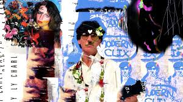
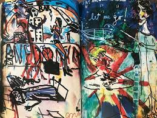
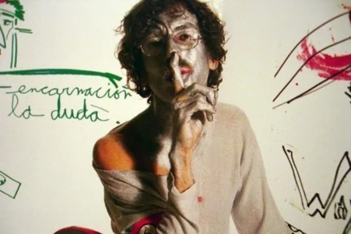
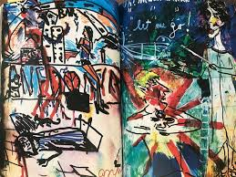
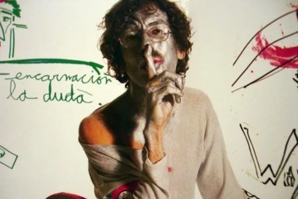
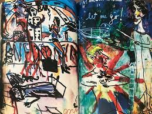
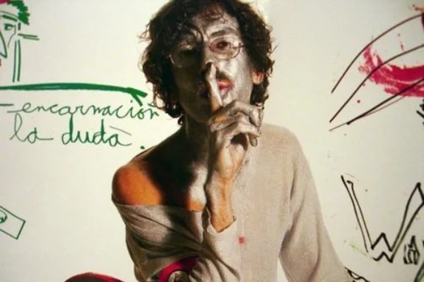

Galería Visual
Las imágenes de esta galería muestran la diversidad del arte visual asociado con Charly García. Cada imagen captura un momento o una representación gráfica de su estilo único, que mezcla lo abstracto, lo psicodélico y lo experimental. Desde sesiones fotográficas hasta ilustraciones que reflejan su identidad artística, cada obra es una manifestación del caos y la creatividad que caracteriza a Charly.

 




